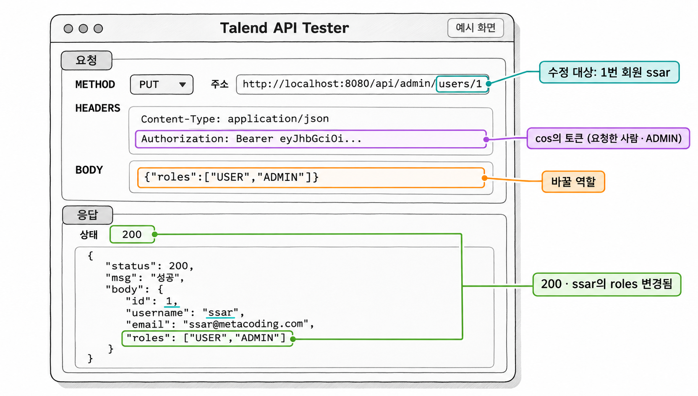

13장. 관리자 API
이 장에서는 관리자 API 두 개를 만듭니다. 하나는 작성자와 상관없이 게시글을 지우는 API이고, 다른 하나는 회원의 역할을 바꾸는 API입니다. 8장에서 쓰고 9장에서 잠시 빼 둔 /api/admin/hello도 이 장에서 관리자 전용 컨트롤러로 옮깁니다. 이 장의 질문은 두 개입니다. 관리자 API는 무엇을 기준으로 요청을 허락할까요? 역할을 바꾸면 이미 발급된 토큰에는 어떤 일이 생길까요?
1. 관리자 API의 권한 구조
1.1 작성자 기준과 역할 기준
/api/admin/**에는 6장에서 정한 URL 규칙이 이미 걸려 있습니다.
코드 조각
.requestMatchers("/api/admin/**").hasRole("ADMIN")이 규칙 덕분에 ADMIN 역할이 없는 토큰은 컨트롤러까지 오지 못하고 필터 단계에서 403으로 막힙니다. 그래서 관리자 API의 서비스 코드는 "요청한 사람이 작성자인가"를 다시 확인하지 않습니다. 9장에서 나눈 두 단계 인가로 보면, 관리자 API는 1단계 URL 규칙만으로 판단이 끝나는 API입니다.
같은 게시글 삭제라도 주소에 따라 판단 기준이 다릅니다. 더미 데이터에서 1번 게시글은 ssar(USER)가 썼고, cos는 USER와 ADMIN 역할을 모두 가지고 있습니다.
| 요청자 | DELETE /api/boards/1 | DELETE /api/admin/boards/1 |
|---|---|---|
| ssar (USER, 작성자) | 200 | 403 (URL 규칙에서 막힘) |
| cos (USER · ADMIN, 작성자 아님) | 403 (서비스의 작성자 확인에서 막힘) | 200 |
11장의 /api/boards/{boardId}는 작성자를 기준으로 삼습니다. 그래서 ADMIN인 cos도 남의 글은 지울 수 없습니다. 반대로 /api/admin/boards/{boardId}는 역할을 기준으로 삼기 때문에 작성자인 ssar도 들어올 수 없습니다. 기준이 다른 두 기능을 주소로 나누어 두면 서비스 코드 하나에 "작성자이거나 관리자이면" 같은 조건을 섞지 않아도 됩니다.
2. 역할 수정 준비
2.1 User에 updateRoles 추가
역할 목록 roles는 @ElementCollection으로 매핑한 컬렉션입니다. JPA는 이 컬렉션의 원소를 user_role_tb에 한 줄씩 저장합니다. 역할을 바꿀 때는 필드에 새 리스트를 대입하지 않고, JPA가 관리하는 기존 리스트를 비운 뒤 새 값을 채웁니다. 이렇게 해야 JPA가 같은 컬렉션의 내용이 바뀐 것으로 알아봅니다. 그러면 트랜잭션이 끝날 때 user_role_tb에서 해당 회원의 행을 지우고 새 역할을 다시 넣습니다.
예제 13-1 — User에 역할 수정 메서드 추가하기
이어서: 예제 2-1
파일명: src/main/java/com/newtenco/blog/user/User.java
package com.newtenco.blog.user;
import jakarta.persistence.*;
import lombok.*;
import org.hibernate.annotations.CreationTimestamp;
import org.springframework.security.core.GrantedAuthority;
import org.springframework.security.core.authority.SimpleGrantedAuthority;
import org.springframework.security.core.userdetails.UserDetails;
import java.sql.Timestamp;
import java.util.ArrayList;
import java.util.Collection;
import java.util.List;
@NoArgsConstructor
@AllArgsConstructor
@Builder
@Getter
@Entity
@Table(name = "user_tb")
public class User implements UserDetails {
@Id
@GeneratedValue(strategy = GenerationType.IDENTITY)
private Integer id;
@Column(unique = true, length = 20, nullable = false)
private String username;
@Column(length = 60, nullable = false)
private String password;
@Column(length = 30, nullable = false)
private String email;
// 권한 목록은 user_role_tb 라는 별도 테이블에 한 줄씩 저장된다
// EAGER: 유저를 조회할 때 권한도 함께 가져온다
@ElementCollection(fetch = FetchType.EAGER)
@CollectionTable(name = "user_role_tb", joinColumns = @JoinColumn(name = "user_id"))
@Column(name = "role")
@Builder.Default
private List<String> roles = new ArrayList<>(List.of("USER"));
@CreationTimestamp
private Timestamp createdAt;
public void update(String email, String password) {
this.email = email;
this.password = password;
}
// 기존 리스트를 비우고 새 역할을 채운다 (JPA 가 user_role_tb 를 delete 후 insert 한다)
public void updateRoles(List<String> roles) {
this.roles.clear();
this.roles.addAll(roles);
}
// 시큐리티는 권한 이름 앞에 ROLE_ 이 붙어 있어야 hasRole("USER") 로 검사할 수 있다
@Override
public Collection<? extends GrantedAuthority> getAuthorities() {
return roles.stream()
.map(role -> new SimpleGrantedAuthority("ROLE_" + role))
.toList();
}
// isAccountNonExpired, isAccountNonLocked, isCredentialsNonExpired, isEnabled 는
// UserDetails 인터페이스에 기본값 true 로 구현되어 있으므로 따로 작성하지 않아도 된다.
}updateRoles()는 9장의 update()처럼 엔티티 안의 값만 바꾸고, 저장은 더티 체킹에 맡깁니다. DB에는 "USER", "ADMIN"처럼 접두사 없는 이름이 들어갑니다. ROLE_은 지금까지처럼 getAuthorities()가 시큐리티에 넘길 때만 붙입니다.
2.2 RolesDTO와 @NotEmpty
역할 수정 요청의 본문은 {"roles":["USER","ADMIN"]}처럼 역할 이름 배열 하나입니다. 이 값을 받을 DTO를 9장의 UserRequest에 추가합니다.
예제 13-2 — 역할 수정 요청 DTO 만들기
이어서: 예제 9-2
파일명: src/main/java/com/newtenco/blog/user/UserRequest.java
package com.newtenco.blog.user;
import jakarta.validation.constraints.Email;
import jakarta.validation.constraints.NotBlank;
import jakarta.validation.constraints.NotEmpty;
import jakarta.validation.constraints.Size;
import java.util.List;
public class UserRequest {
// 회원정보 수정: {"email":"ssar@nate.com","password":"5678"}
public record UpdateDTO(
@NotBlank(message = "이메일을 입력해주세요")
@Email(message = "이메일 형식이 올바르지 않습니다")
String email,
@NotBlank(message = "비밀번호를 입력해주세요")
@Size(min = 4, max = 20, message = "비밀번호는 4~20자여야 합니다")
String password) {
}
// 관리자 역할 수정: {"roles":["USER","ADMIN"]}
public record RolesDTO(
@NotEmpty(message = "역할을 설정해주세요")
List<String> roles) {
}
}@NotBlank는 문자열에 쓰는 검증이고, 리스트에는 @NotEmpty를 씁니다. @NotEmpty는 값이 null일 때와 빈 리스트 []일 때를 모두 막습니다. 역할이 하나도 없는 회원은 /api/**의 hasAnyRole("USER", "ADMIN")도 통과하지 못합니다. 그래서 빈 목록은 요청 단계에서 거절합니다. 이 검증에 실패하면 4장의 GlobalExceptionHandler가 "roles:역할을 설정해주세요"라는 메시지로 400을 응답합니다.
@NotEmpty는 리스트가 비었는지만 봅니다. "SUPER"처럼 허용하지 않는 역할 이름은 서비스에서 따로 검사합니다.
3. AdminService
AdminService는 관리자 기능만 모은 서비스입니다. 1절에서 본 것처럼 이 서비스로 들어오는 요청은 모두 URL 규칙의 ADMIN 확인을 통과한 요청입니다. 그래서 이 서비스의 메서드는 sessionUser를 받지 않습니다.
3.1 관리자 게시글 삭제
관리자 게시글 삭제는 11장 게시글 삭제에서 작성자 확인만 뺀 모양입니다. 게시글이 있는지만 확인하고 지웁니다.
예제 13-3 — 관리자 게시글 삭제 서비스 만들기
파일명: src/main/java/com/newtenco/blog/admin/AdminService.java
package com.newtenco.blog.admin;
import com.newtenco.blog.board.Board;
import com.newtenco.blog.board.BoardRepository;
import com.newtenco.blog.core.handler.errors.NotFoundException;
import lombok.RequiredArgsConstructor;
import org.springframework.stereotype.Service;
import org.springframework.transaction.annotation.Transactional;
/**
* 관리자 기능. /api/admin/** 은 SecurityConfig 에서 ADMIN 만 통과하므로
* 여기서는 작성자 확인을 하지 않는다.
*/
@Transactional(readOnly = true)
@RequiredArgsConstructor
@Service
public class AdminService {
private final BoardRepository boardRepository;
@Transactional
public void 관리자_게시글삭제(Integer boardId) {
Board board = boardRepository.findById(boardId)
.orElseThrow(() -> new NotFoundException("게시글을 찾을 수 없습니다"));
boardRepository.delete(board); // cascade = REMOVE 로 댓글도 함께 삭제
}
}11장의 삭제 메서드에는 "작성자 id와 토큰의 id가 다르면 ForbiddenException"이라는 줄이 있었지만, 여기서는 그 줄이 빠졌습니다. 이 서비스를 지키는 일은 SecurityConfig의 hasRole("ADMIN") 규칙이 맡습니다. 그러니 이 규칙을 지우거나 주소를 /api/admin/ 밖으로 옮기면, 로그인한 누구나 남의 글을 지울 수 있게 됩니다.
삭제는 11장과 같은 이유로 deleteById() 대신 조회한 엔티티를 delete()에 넘깁니다. 그래야 Board의 cascade = CascadeType.REMOVE가 적용되어 게시글에 달린 댓글도 함께 지워집니다.
3.2 역할 검사에 Set을 쓰는 이유
역할 수정 메서드는 역할을 바꾸기 전에 요청 값을 두 번 검사합니다. 먼저 허용된 역할 이름만 들어 있는지 보고, 다음으로 현재 역할과 같은지 봅니다. 두 검사 모두 요청을 List가 아닌 Set으로 바꾼 다음에 합니다.
역할 목록에서는 순서가 의미가 없고, 같은 역할이 두 번 있어서도 안 됩니다. List는 순서와 중복을 그대로 두지만, Set은 중복을 없애고 원소만 비교합니다.
요청한 roles (현재 역할 ["USER","ADMIN"]) | List로 비교 | Set으로 비교 |
|---|---|---|
["USER","ADMIN"] | 같음 | 같음 |
["ADMIN","USER"] | 다름 (순서가 다름) | 같음 |
["USER","USER"] | 중복이 그대로 저장됨 | 중복이 사라져 ["USER"] |
List로 비교하면 순서만 바꾼 요청을 다른 역할로 보고 쓸데없이 다시 저장합니다. ["USER","USER"] 같은 요청이 오면 user_role_tb에 같은 역할이 두 줄 들어갑니다. Set으로 바꾸면 두 문제가 함께 사라집니다.
Set 구현체 가운데 LinkedHashSet은 중복을 없애면서도 넣은 순서를 지킵니다. 요청이 ["USER","ADMIN"]이면 응답과 DB에도 같은 순서로 남아 결과를 읽기 쉽습니다.
예제 13-4 — 역할 수정 서비스 추가하기
이어서: 예제 13-3
파일명: src/main/java/com/newtenco/blog/admin/AdminService.java
package com.newtenco.blog.admin;
import com.newtenco.blog.auth.AuthResponse;
import com.newtenco.blog.board.Board;
import com.newtenco.blog.board.BoardRepository;
import com.newtenco.blog.core.handler.errors.BadRequestException;
import com.newtenco.blog.core.handler.errors.NotFoundException;
import com.newtenco.blog.user.User;
import com.newtenco.blog.user.UserRepository;
import com.newtenco.blog.user.UserRequest;
import lombok.RequiredArgsConstructor;
import org.springframework.stereotype.Service;
import org.springframework.transaction.annotation.Transactional;
import java.util.HashSet;
import java.util.LinkedHashSet;
import java.util.List;
import java.util.Set;
/**
* 관리자 기능. /api/admin/** 은 SecurityConfig 에서 ADMIN 만 통과하므로
* 여기서는 작성자 확인을 하지 않는다.
*/
@Transactional(readOnly = true)
@RequiredArgsConstructor
@Service
public class AdminService {
private static final Set<String> ALLOWED_ROLES = Set.of("USER", "ADMIN");
private final BoardRepository boardRepository;
private final UserRepository userRepository;
@Transactional
public void 관리자_게시글삭제(Integer boardId) {
Board board = boardRepository.findById(boardId)
.orElseThrow(() -> new NotFoundException("게시글을 찾을 수 없습니다"));
boardRepository.delete(board); // cascade = REMOVE 로 댓글도 함께 삭제
}
@Transactional
public AuthResponse.DTO 관리자_역할수정(Integer userId, UserRequest.RolesDTO reqDTO) {
User user = userRepository.findById(userId)
.orElseThrow(() -> new NotFoundException("회원을 찾을 수 없습니다"));
// List -> Set: 중복을 없애고, 순서와 상관없이 내용만 비교한다
// LinkedHashSet 은 요청한 순서를 유지한다
Set<String> requestedRoles = new LinkedHashSet<>(reqDTO.roles());
if (!ALLOWED_ROLES.containsAll(requestedRoles)) {
throw new BadRequestException("역할은 USER, ADMIN 만 사용할 수 있습니다");
}
if (new HashSet<>(user.getRoles()).equals(requestedRoles)) {
throw new BadRequestException("현재와 같은 역할입니다");
}
user.updateRoles(List.copyOf(requestedRoles)); // 더티 체킹
return new AuthResponse.DTO(user);
}
}ALLOWED_ROLES.containsAll(requestedRoles)는 요청한 역할이 모두 허용 목록 안에 있는지 확인합니다. 이 검사가 없으면 관리자가 실수로 "SUPER"를 보내도 그대로 저장됩니다. 그런 역할은 어떤 역할 규칙에도 맞지 않으므로, 그 회원은 로그인이 필요한 API를 하나도 쓰지 못하게 됩니다.
현재 역할과 비교할 때는 user.getRoles()도 HashSet으로 바꿉니다. Set끼리의 equals()는 구현체가 달라도 담긴 원소만 같으면 true입니다. 그래서 HashSet과 LinkedHashSet을 바로 비교해도 됩니다. 마지막에는 List.copyOf()로 다시 리스트를 만들어 updateRoles()에 넘깁니다. 엔티티의 필드 타입이 List<String>이기 때문입니다.
응답은 7장의 AuthResponse.DTO를 그대로 씁니다. 이 DTO에는 비밀번호가 없고 바뀐 roles가 들어 있어서, 결과를 바로 확인할 수 있습니다.
검사 단계별 실패 응답은 다음과 같습니다.
| 검사 | 하는 곳 | 실패 응답 |
|---|---|---|
roles가 null이거나 [] | RolesDTO의 @NotEmpty | 400, "roles:역할을 설정해주세요" |
| 대상 회원이 없음 | findById() | 404, "회원을 찾을 수 없습니다" |
| USER, ADMIN 말고 다른 값이 있음 | ALLOWED_ROLES.containsAll() | 400, "역할은 USER, ADMIN 만 사용할 수 있습니다" |
| 현재 역할과 같음 | Set의 equals() | 400, "현재와 같은 역할입니다" |
4. AdminController
관리자 API 세 개를 컨트롤러 하나에 모읍니다. 9장의 UserController처럼 클래스에 @RequestMapping("/api/admin")을 붙이면 메서드에는 뒷부분 주소만 적으면 됩니다.
예제 13-5 — 관리자 컨트롤러 만들기
이어서: 예제 13-4
파일명: src/main/java/com/newtenco/blog/admin/AdminController.java
package com.newtenco.blog.admin;
import com.newtenco.blog.core.util.Resp;
import com.newtenco.blog.user.User;
import com.newtenco.blog.user.UserRequest;
import jakarta.validation.Valid;
import lombok.RequiredArgsConstructor;
import org.springframework.http.ResponseEntity;
import org.springframework.security.core.annotation.AuthenticationPrincipal;
import org.springframework.web.bind.annotation.*;
// /api/admin/** 은 ADMIN 권한이 있어야 들어올 수 있다 (SecurityConfig)
@RequestMapping("/api/admin")
@RequiredArgsConstructor
@RestController
public class AdminController {
private final AdminService adminService;
// GET /api/admin/hello : 관리자 권한 확인용
@GetMapping("/hello")
public ResponseEntity<?> hello(@AuthenticationPrincipal User sessionUser) {
return Resp.ok("관리자 " + sessionUser.getUsername() + "님 환영합니다");
}
// DELETE /api/admin/boards/1 : 작성자와 상관없이 삭제
@DeleteMapping("/boards/{boardId}")
public ResponseEntity<?> deleteBoard(@PathVariable("boardId") Integer boardId) {
adminService.관리자_게시글삭제(boardId);
return Resp.ok(null);
}
// PUT /api/admin/users/1 : {"roles":["USER","ADMIN"]}
@PutMapping("/users/{userId}")
public ResponseEntity<?> updateRoles(@PathVariable("userId") Integer userId,
@Valid @RequestBody UserRequest.RolesDTO reqDTO) {
return Resp.ok(adminService.관리자_역할수정(userId, reqDTO));
}
}/hello는 9장에서 UserController에서 지운 주소를 이 컨트롤러로 옮긴 것입니다. 클래스의 @RequestMapping("/api/admin")과 합쳐지므로 주소는 8장과 같은 /api/admin/hello입니다.
역할 수정 주소에는 대상 회원 번호 {userId}가 들어갑니다. 9장에서는 주소의 userId를 검증되지 않은 값으로 보고 토큰의 id와 비교했습니다. 관리자 API는 다른 회원을 지정하는 것이 원래 목적입니다. 요청한 사람이 관리자인지는 URL 규칙이 이미 확인했으므로, 여기서는 주소의 값을 수정 대상으로만 씁니다.
SecurityConfig는 고치지 않습니다. /api/admin/** 규칙은 6장부터 있었고, 이 규칙이 /api/**보다 위에 있어 먼저 적용되기 때문입니다.
5. Talend API Tester로 확인하기
서버를 다시 실행해 더미 데이터를 처음 상태로 돌립니다. 그다음 ssar과 cos로 각각 로그인해 토큰을 받습니다. 요청마다 Authorization 헤더에 해당 토큰을 Bearer 토큰 형식으로 넣습니다. 역할 수정 요청은 METHOD를 PUT으로 두고, BODY에 JSON을 넣고, Content-Type을 application/json으로 지정합니다.
아래 표의 요청을 위에서부터 차례대로 보냅니다. 2번 게시글은 ssar의 글이고, 1번 회원은 ssar입니다.
| 순서 | 요청 | 토큰 | 본문 | 응답 |
|---|---|---|---|---|
| 1 | DELETE /api/admin/boards/2 | ssar | 없음 | 403, "권한이 없습니다" |
| 2 | DELETE /api/admin/boards/2 | cos | 없음 | 200, ssar의 글이지만 삭제됨 |
| 3 | GET /api/admin/hello | cos | 없음 | 200, "관리자 cos님 환영합니다" |
| 4 | PUT /api/admin/users/1 | cos | {"roles":["USER"]} | 400, "현재와 같은 역할입니다" |
| 5 | PUT /api/admin/users/1 | cos | {"roles":["SUPER"]} | 400, "역할은 USER, ADMIN 만 사용할 수 있습니다" |
| 6 | PUT /api/admin/users/1 | cos | {"roles":[]} | 400, "roles:역할을 설정해주세요" |
| 7 | PUT /api/admin/users/1 | cos | {"roles":["USER","ADMIN"]} | 200, ssar의 roles가 ["USER","ADMIN"] |
| 8 | PUT /api/admin/users/1 | cos | {"roles":["ADMIN","USER"]} | 400, "현재와 같은 역할입니다" |
1번은 컨트롤러에 닿기 전에 필터 단계에서 막힌 응답으로, 6장의 accessDeniedHandler가 만든 403입니다. 2번은 11장에서 cos가 ssar의 1번 글을 /api/boards/1로 지우려다 403을 받았던 결과와 비교해 보세요.
7번 요청의 응답 본문은 다음과 같습니다.
실행 결과
{"status":200,"msg":"성공","body":{"id":1,"username":"ssar","email":"ssar@metacoding.com","roles":["USER","ADMIN"]}}
생성형 예시 · 실제 실행 안 함
8번은 7번과 순서만 다릅니다. Set으로 비교하므로 바뀔 내용이 없다고 보고 400을 응답합니다. 7번 요청 뒤에 H2 콘솔에서 user_role_tb를 조회하면 user_id가 1인 행이 USER, ADMIN 두 줄로 바뀌어 있습니다.
6. 연습문제 — 역할을 바꾼 뒤 옛 토큰으로 요청하기
5절에서 ssar에게 ADMIN 역할을 주었습니다. 그렇다면 ssar은 지금 바로 관리자 API를 쓸 수 있을까요? 역할을 바꾸기 전에 받은 토큰과 바꾼 뒤에 받은 토큰으로 같은 관리자 API를 요청해 결과를 비교합니다.
요구사항
- 서버를 다시 실행합니다.
- ssar / 1234로 로그인해 토큰 A를 받습니다.
- cos / 1234로 로그인해 토큰을 받고, 그 토큰으로
PUT /api/admin/users/1에{"roles":["USER","ADMIN"]}을 보냅니다. - 토큰 A로
GET /api/admin/hello를 요청합니다. - ssar / 1234로 다시 로그인해 토큰 B를 받습니다.
- 토큰 B로
GET /api/admin/hello를 요청합니다. - 토큰 A와 토큰 B를 jwt.io에 붙여 넣고 페이로드의
roles를 비교합니다.
완료 조건
- 4번 요청은 403,
"권한이 없습니다"로 응답합니다. - 6번 요청은 200,
"관리자 ssar님 환영합니다"로 응답합니다. - 토큰 A의
roles는["USER"], 토큰 B의roles는["USER","ADMIN"]인 것을 확인합니다. - 3번에서 DB의 역할이 이미 바뀌었는데도 4번이 403인 이유를 3장의
verify()와 5장의JwtProvider가 하는 일로 설명합니다. 9장 4.3에서 비밀번호를 바꿔도 기존 토큰이 유효했던 것과 비교해 봅니다.
7. 전체 API와 권한 정리
이 장으로 블로그 REST API 서버가 완성되었습니다. 지금까지 만든 API와 각 API의 인가 단계를 한 표에 모으면 다음과 같습니다. 1단계는 SecurityConfig의 URL 규칙이고, 2단계는 서비스 코드의 확인입니다.
| 장 | 메서드 | 주소 | 1단계 URL 규칙 | 2단계 서비스 확인 |
|---|---|---|---|---|
| 7 | POST | /join | permitAll() | 없음 |
| 7 | POST | /login | permitAll() | 없음 |
| 7 | GET | /check-username | permitAll() | 없음 |
| 8 | GET | /api/users/me | hasAnyRole("USER", "ADMIN") | 없음 (토큰의 주인) |
| 9 | GET | /api/users/{userId} | hasAnyRole("USER", "ADMIN") | 본인 |
| 9 | PUT | /api/users | hasAnyRole("USER", "ADMIN") | 없음 (토큰의 주인) |
| 10 | GET | /api/boards | permitAll() | 없음 |
| 10 | GET | /api/boards/{boardId} | permitAll() | 없음 (로그인하면 isOwner 계산) |
| 10 | POST | /api/boards | hasAnyRole("USER", "ADMIN") | 없음 |
| 11 | GET | /api/boards/{boardId}/edit | hasAnyRole("USER", "ADMIN") | 작성자 |
| 11 | PUT | /api/boards/{boardId} | hasAnyRole("USER", "ADMIN") | 작성자 |
| 11 | DELETE | /api/boards/{boardId} | hasAnyRole("USER", "ADMIN") | 작성자 |
| 12 | POST | /api/replies | hasAnyRole("USER", "ADMIN") | 없음 |
| 12 | DELETE | /api/replies/{replyId} | hasAnyRole("USER", "ADMIN") | 작성자 |
| 13 | GET | /api/admin/hello | hasRole("ADMIN") | 없음 |
| 13 | DELETE | /api/admin/boards/{boardId} | hasRole("ADMIN") | 없음 |
| 13 | PUT | /api/admin/users/{userId} | hasRole("ADMIN") | 없음 |
1단계 열과 2단계 열을 나란히 보면 두 단계가 맡는 일이 다릅니다. 누가 어떤 종류의 기능을 쓸 수 있는지는 역할로 정해집니다. 이 판단은 주소만 보고 할 수 있으므로 1단계 URL 규칙이 맡습니다. 반면 요청한 데이터가 요청한 사람의 것인지는 DB의 작성자와 토큰의 id를 비교해야 알 수 있습니다. 그래서 2단계 서비스 코드가 맡습니다. /api/users/me와 PUT /api/users는 토큰 주인의 정보만 다루고 대상을 주소로 받지 않으므로 2단계 확인이 필요 없습니다.
실패 응답도 단계에 따라 나뉩니다. 1단계에서 막히면 6장의 RespFilter가 401이나 403을 만듭니다. 2단계에서 막히면 서비스가 던진 예외를 4장의 GlobalExceptionHandler가 400 · 401 · 403 · 404로 바꿉니다. 어느 단계에서 막혀도 클라이언트는 status · msg · body 세 칸으로 된 같은 모양의 JSON을 받습니다.
마지막으로 토큰의 한계도 기억해 둡니다. 서버는 요청마다 DB를 조회하지 않고 토큰 안의 roles로 사용자를 복원합니다. 그래서 역할이나 비밀번호를 바꿔도 이미 발급된 토큰은 만료될 때까지 예전 정보 그대로 쓰입니다. 이 한계는 Stateless 방식을 고르면서 함께 받아들인 성질입니다.